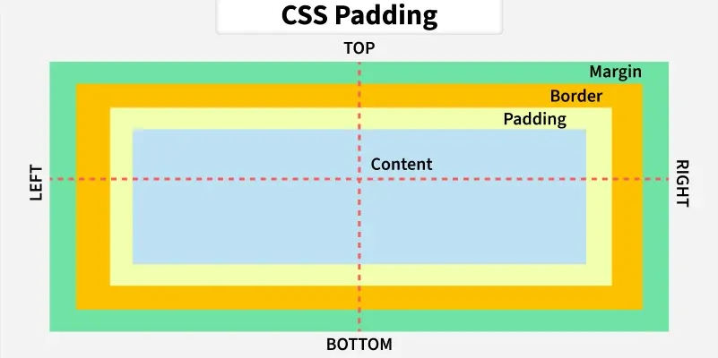

Fundamentos
Este capítulo presenta los fundamentos del desarrollo web, comenzando por el modelo cliente-servidor y el protocolo que rige la comunicación entre ambas partes. A partir de esa base se abordan las dos tecnologías que dan forma a las páginas web, es decir, HTML para la estructura del contenido y CSS para su presentación visual, junto con el papel que JavaScript desempeña en la interacción con el usuario. El recorrido pasa por las modalidades de alojamiento disponibles y por la distinción entre bibliotecas, frameworks y APIs, continúa con la representación interna del documento en el navegador, conocida como DOM, y concluye con las técnicas de diseño adaptativo y su implementación mediante el framework Bootstrap.
Bibliografía¶
- Mozilla. (s.f.). MDN Web Docs. https://developer.mozilla.org/es/
- Meta. (s.f.). Introduction to Front-End Development [Curso]. Coursera. https://www.coursera.org/learn/introduction-to-front-end-development
Introducción¶
El desarrollo web se articula en torno a tres tecnologías fundamentales que operan de forma conjunta y complementaria dentro del navegador.
HTML (HyperText Markup Language) define la estructura y disposición de los elementos de la página, tales como títulos, botones, formularios o párrafos. El término hypertext hace referencia a texto que contiene enlaces a otros textos, lo que constituye la base de la navegación web. HTML se especifica actualmente como un estándar en evolución continua (living standard) mantenido por el WHATWG (Web Hypertext Application Technology Working Group) en colaboración con el W3C (World Wide Web Consortium), organismo que coordina buena parte de las tecnologías y recomendaciones de la web.
CSS (Cascading Style Sheets) se encarga del estilo visual de esos elementos y controla colores, tipografías, márgenes y disposición espacial. Su nombre alude al mecanismo de cascada, según el cual las reglas de estilo se combinan y resuelven en función de su origen y de su especificidad.
JavaScript gestiona la interacción con el usuario y abarca desde el procesamiento de entradas hasta la comunicación con interfaces de programación externas o la actualización dinámica del contenido sin necesidad de recargar la página.
A estas tres tecnologías se las denomina colectivamente front end, es decir, la parte de la aplicación que el usuario ve y con la que interactúa directamente. En contraposición, el back end se ocupa de la lógica del servidor, la gestión de bases de datos, la autenticación y la exposición de APIs.
Modelo cliente-servidor¶
La web se sustenta en el modelo cliente-servidor. En este esquema, múltiples clientes, entre ellos ordenadores y dispositivos móviles, se comunican a través de Internet con un servidor centralizado, habitualmente alojado en un centro de datos. El flujo de comunicación sigue un patrón definido: el cliente realiza una petición (request) al servidor. Este la procesa y devuelve una respuesta (response) que el cliente recibe y presenta al usuario.
Este intercambio se rige por el protocolo HTTP (HyperText Transfer Protocol), que define cómo se estructuran y transmiten los mensajes entre ambas partes. Para comunicaciones seguras se utiliza HTTPS, que transporta los mismos mensajes de HTTP sobre una capa de cifrado, de modo que un tercero que intercepte el tráfico no pueda interpretarlo ni alterarlo.
Una petición HTTP se compone de una línea inicial que identifica el método y el recurso solicitado, de un conjunto de cabeceras (headers) que aportan información adicional y, de forma opcional, de un cuerpo con los datos que se envían al servidor. Los métodos de consulta habitualmente carecen de cuerpo, mientras que los de escritura lo utilizan para transportar la información.
Petición HTTP
La petición solicita el recurso raíz del servidor indicado en la cabecera Host.
En esta petición, GET es el método utilizado, / es la ruta del recurso
solicitado, HTTP/1.1 indica la versión del protocolo y Host es una cabecera que
especifica el servidor de destino. Al tratarse de una consulta, la petición no
incluye cuerpo.
El método indica la naturaleza de la operación que se desea realizar sobre el recurso. Los métodos más habituales son los siguientes:
| Método | Descripción | Ejemplo de uso |
|---|---|---|
GET |
Obtiene la representación de un recurso sin modificarlo. | Cargar una página web. |
POST |
Envía datos al servidor para que los procese según su criterio. | Enviar un formulario. |
PUT |
Reemplaza por completo la representación del recurso indicado. | Sustituir un perfil. |
PATCH |
Aplica una modificación parcial sobre un recurso existente. | Cambiar solo el correo. |
DELETE |
Elimina el recurso indicado. | Borrar una publicación. |
Métodos seguros e idempotentes
Un método es seguro cuando no altera el estado del servidor, condición que
cumple GET. Un método es idempotente cuando repetir la misma petición produce
el mismo estado final que ejecutarla una sola vez, propiedad que cumplen GET,
PUT y DELETE.
POST y PATCH no son idempotentes, de modo que reintentar una petición fallida
puede provocar efectos duplicados. Esta distinción importa al diseñar clientes que
reintentan de forma automática y al decidir qué respuestas pueden almacenarse para
reutilizarlas.
Conviene además no confundir PUT con PATCH. PUT sustituye la representación
completa, por lo que los campos que se omiten se pierden, y puede crear el recurso
si no existía. PATCH describe únicamente los cambios que deben aplicarse.
Las respuestas del servidor incluyen un código de estado que indica el resultado de la petición. Estos códigos se agrupan por rangos según su significado:
| Rango | Categoría | Ejemplo representativo |
|---|---|---|
| 1xx | Respuesta informativa | 100 Continue |
| 2xx | Éxito | 200 OK |
| 3xx | Redirección | 301 Moved Permanently |
| 4xx | Error del cliente | 404 Not Found |
| 5xx | Error del servidor | 500 Internal Server Error |
Cuando el navegador recibe la respuesta, comienza a analizar el HTML de forma incremental, sin esperar a disponer del documento completo. El analizador va construyendo el árbol de elementos a medida que reconoce las etiquetas, y en paralelo procesa las hojas de estilo para construir el modelo de estilos. Solo cuando ambos están disponibles puede pintar el contenido en pantalla, proceso que se conoce como page rendering.
Este comportamiento explica por qué el orden en que se declaran los recursos influye en
la velocidad percibida. Una hoja de estilos bloquea el pintado hasta que se descarga, y
un script declarado sin los atributos defer o async detiene el análisis del
documento mientras se descarga y se ejecuta, de modo que retrasa la aparición de todo el
contenido que va detrás.
Tipos de recursos y contenido¶
Dentro del ecosistema web conviene distinguir entre distintos tipos de recursos. Una webpage es una única página web. Un website es un conjunto de webpages interrelacionadas que comparten un mismo dominio y una misma identidad. Una aplicación web, como Spotify o Gmail, ofrece una experiencia dinámica e interactiva, con contenido que se genera y actualiza en tiempo real en función de las acciones del usuario.
En cuanto al contenido, existe una distinción importante entre páginas estáticas y dinámicas. En las páginas estáticas el contenido permanece invariable y se sirve tal cual está almacenado en el servidor, lo que simplifica el despliegue y reduce el coste de mantenimiento. En las páginas dinámicas el contenido se genera en el momento de la petición y se envía al navegador adaptado al contexto, por ejemplo al usuario autenticado o al idioma solicitado.
Para reducir el número de peticiones y mejorar el rendimiento se recurre a la caché, un mecanismo que almacena temporalmente recursos ya descargados para evitar solicitarlos de nuevo. Esta estrategia disminuye la latencia percibida y la carga sobre el servidor, a cambio de introducir la necesidad de invalidar los recursos cuando su contenido cambia.
Hosting¶
El hosting es el servicio que permite alojar una aplicación o sitio web en un servidor accesible a través de Internet. Existen varias modalidades, cuya elección depende del volumen de tráfico previsto, del presupuesto y de los requisitos de control sobre la infraestructura.
El hosting compartido distribuye los recursos de un mismo servidor físico entre múltiples clientes, de modo que varias webs comparten CPU, memoria y almacenamiento. Su principal ventaja es el bajo coste, lo que lo hace adecuado para proyectos pequeños o en fase de desarrollo con poca demanda de tráfico. Su inconveniente es que el consumo de un vecino puede degradar el rendimiento del resto.
El servidor virtual privado (Virtual Private Server, VPS) asigna a cada cliente una máquina virtual con recursos garantizados y acceso administrativo completo. Constituye el punto intermedio habitual, ya que ofrece control sobre la configuración del sistema a un coste muy inferior al de un servidor físico propio.
El hosting dedicado reserva los recursos de un servidor físico en exclusiva para un único cliente. Ofrece el máximo rendimiento y control, aunque a un coste notablemente superior. Es la opción habitual para aplicaciones con alta demanda o requisitos estrictos de aislamiento.
El hosting en la nube reparte la aplicación entre recursos virtualizados que pueden crecer o reducirse según la demanda, y se factura por consumo. Dentro de esta categoría merecen mención aparte las plataformas orientadas a contenido estático y a funciones sin servidor, como GitHub Pages, Netlify, Vercel o Cloudflare Pages, que resultan la opción más sencilla y económica para un sitio sin lógica de servidor.
| Característica | Compartido | VPS | Dedicado | Nube |
|---|---|---|---|---|
| Recursos | Compartidos entre clientes | Garantizados por contrato | Exclusivos de un cliente | Elásticos según demanda |
| Coste | Reducido | Moderado | Elevado | Proporcional al consumo |
| Control | Limitado por el proveedor | Acceso administrativo | Configuración completa | Definido por el proveedor |
| Uso típico | Proyectos pequeños o en pruebas | Proyectos de tamaño medio | Aplicaciones de alta demanda | Cargas con tráfico variable |
Bibliotecas, frameworks y APIs¶
En el desarrollo web es importante distinguir entre bibliotecas y frameworks. Una biblioteca es un conjunto reducido de funcionalidades que resuelve un problema específico, como la validación de datos, y es el código propio el que decide cuándo y cómo invocarla. Un framework establece una estructura de trabajo más amplia e invierte esa relación, ya que es el framework el que llama al código propio en los puntos que él define, e impone convenciones que condicionan la organización del proyecto. Ejemplos de frameworks orientados a la construcción de sitios y aplicaciones web son Astro o Docusaurus. En este mismo ecosistema se sitúa TypeScript, que, sin ser un framework, extiende JavaScript añadiendo un sistema de tipos estáticos que se verifica antes de la ejecución. Las bibliotecas de Node.js se gestionan mediante npm, su gestor de paquetes oficial.
El nombre de npm
Es frecuente leer que npm son las siglas de Node Package Manager. La documentación oficial del proyecto indica de forma explícita que el nombre no es un acrónimo y que se escribe siempre en minúsculas.
Una API, o interfaz de programación de aplicaciones (Application Programming
Interface), es el contrato que un componente de software expone para que otros lo
utilicen y describe las operaciones disponibles y el formato de los datos sin revelar
los detalles de la implementación. En el contexto web resultan especialmente relevantes
tres categorías. Las Browser APIs extienden las capacidades del navegador, como
Fetch para realizar peticiones HTTP, Canvas para renderizado gráfico o la History
API para gestionar el historial de navegación. Las Sensor-based APIs permiten
interactuar con sensores físicos en dispositivos del internet de las cosas (Internet of
Things, IoT). Por último, las APIs REST son aquellas que aplican REST
(Representational State Transfer), un estilo arquitectónico basado en identificar los
recursos mediante identificadores uniformes (Uniform Resource Identifier, URI), operar
sobre ellos con un conjunto uniforme de métodos y mantener la interacción sin estado en
el servidor.
HTML¶
HTML estructura el contenido mediante etiquetas (tags) y elementos. Una
etiqueta es la marca que se escribe en el documento y que declara un tipo de contenido o
de comportamiento. Pueden ser de apertura y cierre, como <p>...</p>, en cuyo caso
delimitan un contenido, o autocontenidas, como <br />, cuando no encierran nada. El
elemento es el conjunto formado por la etiqueta de apertura, su contenido y la de
cierre, y es lo que el navegador convierte en un nodo de la página.
Estructura de un documento¶
Todo documento HTML sigue una organización común. La declaración <!doctype html> no
identifica ninguna versión del lenguaje, ya que HTML es un estándar en evolución
continua. Su función es activar el modo estándar del navegador, de modo que este
aplique las reglas de maquetación actuales. Si se omite, el navegador entra en un modo
de compatibilidad con documentos antiguos y el resultado visual puede diferir de forma
notable.
El elemento raíz <html> contiene dos bloques diferenciados. El primero, <head>,
alberga metadatos que no se muestran directamente en la página, como el título de la
pestaña, la codificación de caracteres o los enlaces a hojas de estilo. El segundo,
<body>, agrupa el contenido visible.
Esqueleto de un documento HTML
El documento declara su codificación y su idioma, y separa los metadatos del contenido visible.
El atributo lang declara el idioma del documento, lo que resulta relevante tanto
para los motores de búsqueda como para los lectores de pantalla, que seleccionan la
voz y las reglas de pronunciación a partir de ese valor.
Etiquetas básicas¶
Las etiquetas de uso más frecuente cubren la organización del texto, la creación de listas, la inserción de enlaces e imágenes y la recogida de datos del usuario.
| Etiqueta | Descripción |
|---|---|
<h1> a <h6> |
Definen títulos jerarquizados de mayor a menor relevancia. |
<p> |
Delimita un párrafo de texto. |
<br /> |
Introduce un salto de línea. |
<strong> y <em> |
Indican importancia y énfasis semántico. |
<b> e <i> |
Aplican negrita e itálica como estilo puramente visual. |
<ul>, <ol> y <li> |
Construyen listas no ordenadas, ordenadas y sus elementos. |
<div> |
Agrupa contenido sin aportar significado semántico. |
<a> |
Crea un enlace hacia otro recurso. |
<img /> |
Inserta una imagen. |
<table> |
Estructura información en filas y columnas. |
<form> e <input /> |
Recogen datos introducidos por el usuario. |
La distinción entre <strong> y <b>, así como entre <em> e <i>, es semántica. Las
primeras comunican importancia o énfasis al navegador y a las tecnologías de asistencia,
mientras que las segundas se limitan a modificar la apariencia del texto.
En el caso de <div>, lo que no aporta es significado. Sí tiene presentación propia, ya
que la hoja de estilos del navegador le asigna un comportamiento de bloque. Cuando el
contenido que se agrupa tiene un papel reconocible en la página conviene emplear la
etiqueta semántica correspondiente, como <header>, <nav>, <main>, <section>,
<article> o <footer>, que transmiten esa información a los lectores de pantalla y a
los motores de búsqueda.
Etiquetas HTML básicas
El fragmento recoge una muestra de cada categoría de etiqueta descrita en la tabla.
Navegación, listas e imágenes¶
El atributo href de la etiqueta <a> admite rutas relativas, lo que permite enlazar
documentos alojados en el mismo proyecto y construir así la navegación de un sitio web.
De forma análoga, el atributo src de <img /> indica la ubicación del archivo de
imagen, mientras que alt proporciona una descripción alternativa imprescindible para
la accesibilidad.
El siguiente ejemplo ilustra un sitio web sencillo formado por una página principal que combina listas anidadas con enlaces hacia otras dos páginas.
Página principal con enlaces y listas
La página anida una lista dentro de otra y enlaza dos documentos del mismo proyecto mediante rutas relativas.
La primera de las páginas enlazadas muestra el uso conjunto de imágenes, saltos de línea y enlaces de retorno hacia el documento de origen.
Página con imagen
La imagen se acompaña de un texto alternativo descriptivo y de un pie asociado
mediante <figcaption>, que es el elemento previsto para ello.
Formularios¶
Los formularios permiten enviar datos al servidor. El elemento <form> define el
destino de la información mediante el atributo action y el método HTTP empleado
mediante method. Cada campo se declara con <input />, cuyo atributo type determina
la naturaleza del dato y el control que muestra el navegador. El atributo name
identifica el campo en el envío, y la etiqueta <label> asocia una descripción textual
a un campo concreto a través de la correspondencia entre for e id, lo que resulta
esencial para la accesibilidad.
Formulario de registro
Cada campo se asocia a su etiqueta descriptiva mediante los atributos for e id.
El método POST transmite los datos en el cuerpo de la petición, a diferencia de
GET, que los añadiría a la dirección del recurso (Uniform Resource Locator,
URL).
El método no protege la información
Es un error extendido suponer que POST protege los datos que transporta. Sobre
HTTP sin cifrar, el cuerpo de la petición viaja tan legible como una cadena de
consulta y cualquiera que intercepte el tráfico puede leer la contraseña.
Lo que POST sí evita es que los datos queden registrados en el historial del
navegador, en los registros del servidor y en la cabecera Referer, y que la
petición se almacene en caché. La confidencialidad la aporta exclusivamente HTTPS,
de modo que cualquier formulario que recoja credenciales debe servirse y enviarse
sobre una
conexión cifrada con TLS (Transport Layer Security), que es la capa sobre la que se apoya HTTPS.
El DOM¶
El DOM (Document Object Model) es una representación en forma de árbol de todos
los elementos de una página HTML. Cuando el navegador carga una página, construye esta
estructura jerárquica a partir del código fuente. La raíz del árbol es el nodo
document, del que desciende el elemento raíz <html>, y de este <head> y <body>
con sus respectivos elementos hijos. No todos los nodos proceden de una etiqueta, ya que
el texto y los comentarios también generan nodos propios.
El DOM es una estructura viva desde el momento en que se construye. Lo que permanece inalterable es el HTML que el servidor envió, mientras que el árbol puede modificarse en cualquier momento desde JavaScript añadiendo, eliminando o alterando elementos sin recargar la página. Este es precisamente el principio sobre el que se construyen frameworks como React.
Accesibilidad¶
Resulta una buena práctica considerar siempre la accesibilidad al desarrollar interfaces web, de modo que el contenido pueda ser utilizado por personas con diversidad funcional. Para ello se puede consultar la WAI (Web Accessibility Initiative) y el estándar ARIA (Accessible Rich Internet Applications), que proporcionan guías y atributos complementarios para describir el propósito y el estado de los elementos de la interfaz.
Accesibilidad desde el marcado
El uso correcto de etiquetas semánticas, de descripciones alternativas en las imágenes y de asociaciones entre etiquetas y campos de formulario cubre buena parte de los requisitos de accesibilidad sin necesidad de atributos adicionales. La primera regla de ARIA es, de hecho, no utilizar ARIA cuando existe un elemento nativo que ya comunica esa información.
Dos consecuencias prácticas se derivan de este principio. La primera es que un
elemento que navega a otra página debe ser un enlace y no un botón, ya que solo el
enlace aparece en la lista de enlaces del lector de pantalla y admite abrirse en
otra pestaña. La segunda es que las cabeceras de una tabla deben declarar con
scope la dirección a la que se aplican, para que el lector anuncie la cabecera
correcta al recorrer las celdas.
CSS¶
CSS define el aspecto visual de los elementos HTML. Su sintaxis básica consiste en un selector, que identifica los elementos a los que se aplica el estilo, seguido de un bloque de declaración con pares propiedad-valor.
Sintaxis básica de CSS
La regla aplica un color a todos los elementos <h1> del documento.
Los estilos pueden declararse directamente en el documento, aunque lo habitual es
mantenerlos en un archivo independiente y vincularlo desde el <head>. Esta separación
entre estructura y presentación facilita la reutilización de estilos en múltiples
páginas.
Vincular hoja de estilos
El elemento <link> asocia al documento una hoja de estilos externa.
Selectores¶
CSS ofrece varios tipos de selectores para aplicar estilos con distintos niveles de
especificidad. El selector de elemento aplica estilos a todas las instancias de una
etiqueta. El selector de ID, precedido por #, identifica un elemento único en la
página. El selector de clase, precedido por ., permite reutilizar estilos en
múltiples elementos y constituye la opción más habitual. Además, existen selectores
descendentes, que actúan sobre los elementos contenidos en otro, selectores de hijo
directo, que se limitan al primer nivel de anidamiento, y pseudoclases, que aplican
estilos según el estado del elemento.
Cuando varias reglas afectan al mismo elemento, gana la de mayor especificidad. El orden de menor a mayor es selector de elemento, selector de clase o pseudoclase, y selector de ID. Entre reglas de igual especificidad prevalece la declarada más adelante en la hoja.
Tipos de selectores CSS
Cada regla ilustra una forma distinta de seleccionar los elementos a los que se aplica el estilo.
La correspondencia en HTML es la siguiente:
El siguiente ejemplo completa el sitio iniciado en la sección de HTML con la
pagina_2.html que la página principal enlazaba, y combina el uso de selectores con una
hoja de estilos externa que define los bordes de una tabla.
Página con tabla
La tabla separa la cabecera del cuerpo y declara el ámbito de cada celda de cabecera.
La hoja de estilos asociada (stylesheet.css) es la siguiente:
Los elementos <thead> y <tbody> agrupan la cabecera y el cuerpo de la tabla, y
el atributo scope="col" indica que cada <th> encabeza una columna. El elemento
<caption> aporta un título accesible que describe el contenido de la tabla.
Modelo de caja¶

En CSS, cada elemento HTML se representa como una caja (box model) compuesta por
cuatro capas concéntricas. La más interna es el contenido, cuyo tamaño se controla
con las propiedades width, min-width, max-width, height, min-height y
max-height. Alrededor del contenido se encuentra el padding, o relleno interno,
que separa el contenido del borde. El border rodea el padding y puede adoptar
estilos como solid, dashed (discontinuo), dotted (punteado) o double (doble).
Finalmente, el margin es el espacio exterior que separa la caja de otros elementos
adyacentes.
Con el comportamiento por defecto, box-sizing: content-box, las propiedades width y
height dimensionan únicamente el área de contenido, de modo que el padding y el
border se suman al espacio que el elemento ocupa en pantalla:
En estas expresiones, \(\text{content width}\) y \(\text{content height}\) representan las dimensiones del área de contenido, mientras que los términos restantes corresponden al relleno y al border declarados en cada uno de los cuatro lados del elemento.
La alternativa border-box
Declarar box-sizing: border-box cambia el significado de width y height, que
pasan a incluir el padding y el border. Un elemento con width: 200px, 20 px de
relleno y 1 px de borde mide entonces 200 px en total, en lugar de 242 px.
Este comportamiento resulta mucho más predecible al maquetar, y por ello es habitual aplicarlo a todo el documento. Bootstrap, por ejemplo, lo establece de forma global en su hoja de estilos base, de modo que al usar Bootstrap este es el modelo vigente.
Elementos de bloque y de línea¶
Los elementos HTML se clasifican según el tipo de caja que generan en el flujo del
documento. Los elementos de bloque, como <div>, <form>, <h1> o <p>, ocupan
por defecto todo el ancho disponible y se apilan verticalmente, uno debajo del anterior.
Los elementos de línea, como <a>, <strong> o <b>, ocupan únicamente el espacio
de su contenido, se colocan dentro del flujo del texto y no admiten que se les fije una
anchura o una altura.
Existe un tercer caso. Los elementos de línea en bloque (inline-block) se sitúan
en el flujo del texto como los de línea, pero sí aceptan dimensiones y márgenes
verticales. A esta categoría pertenecen los elementos reemplazados, como <img /> o
<input />, cuyo contenido lo aporta un recurso externo o el propio navegador. Por eso
una imagen admite los atributos width y height, a diferencia de un <strong>.
Esta distinción condiciona la disposición de los elementos y explica por qué ciertas
propiedades de tamaño o de margen no surten efecto sobre algunos de ellos. La propiedad
display permite cambiar el comportamiento por defecto de cualquier elemento.
Diseño responsive¶
El diseño responsive consiste en adaptar la presentación de una web a distintos tamaños de pantalla y resoluciones. Se apoya en tres pilares, que son los flexible grids o rejillas flexibles, las fluid images o imágenes fluidas y las media queries, consultas que aplican estilos según las características del dispositivo.
Bootstrap¶
Bootstrap es un framework de CSS y JavaScript que facilita la creación de
interfaces responsive mediante componentes reutilizables y un sistema de rejilla
predefinido. Su rejilla divide el ancho disponible en 12 columnas y se estructura
siempre con un contenedor (container), filas (row) y columnas (col).
Bootstrap sigue el enfoque mobile first, según el cual los estilos base se aplican a pantallas pequeñas y los breakpoints permiten sobrescribir el diseño para pantallas mayores. Cada breakpoint se identifica mediante un infijo que se incorpora al nombre de la clase:
| Infijo | Anchura mínima | Dispositivo de referencia |
|---|---|---|
| Ninguno | 0 px | Móviles en vertical |
sm |
576 px | Móviles en horizontal |
md |
768 px | Tabletas |
lg |
992 px | Ordenadores portátiles |
xl |
1200 px | Monitores de escritorio |
xxl |
1400 px | Monitores de gran formato |
Sistema de rejilla de Bootstrap
La columna ocupa el ancho completo en pantallas pequeñas y la mitad en pantallas grandes.
Las herramientas de desarrollo del navegador permiten simular distintos dispositivos para verificar el comportamiento responsive sin necesidad de disponer del hardware correspondiente.
Los dos ejemplos siguientes muestran un par de páginas con navegación entre ellas mediante componentes de Bootstrap cargados desde una red de distribución de contenidos (Content Delivery Network, CDN).
El atributo integrity
El atributo integrity no contiene una firma digital, sino un resumen criptográfico
(SHA-384) del contenido esperado del archivo. El navegador calcula el resumen del
recurso descargado y lo compara con el declarado, de modo que descarta el archivo si
no coincide.
Este mecanismo, denominado Subresource Integrity, detecta alteraciones del recurso
pero no acredita su origen. Requiere además el atributo crossorigin cuando el
recurso se obtiene de otro dominio, ya que solo así el navegador dispone del
contenido completo para verificarlo.
Página principal con Bootstrap
El botón de navegación se implementa como un enlace con apariencia de botón, y el
script de Bootstrap se declara al final del <body> para no bloquear el análisis
del documento.
La etiqueta <meta name="viewport"> indica al navegador que ajuste la anchura del
documento a la del dispositivo, requisito imprescindible para que las media
queries de Bootstrap surtan efecto.
Segunda página con Bootstrap
La segunda página reutiliza sin cambios el <head> y el script del ejemplo
anterior, de modo que solo se muestra el contenido del contenedor.
Con estas piezas queda cubierto el recorrido completo, desde la petición que el navegador envía al servidor hasta la hoja de estilos que decide cómo se presenta la respuesta en cualquier tamaño de pantalla.